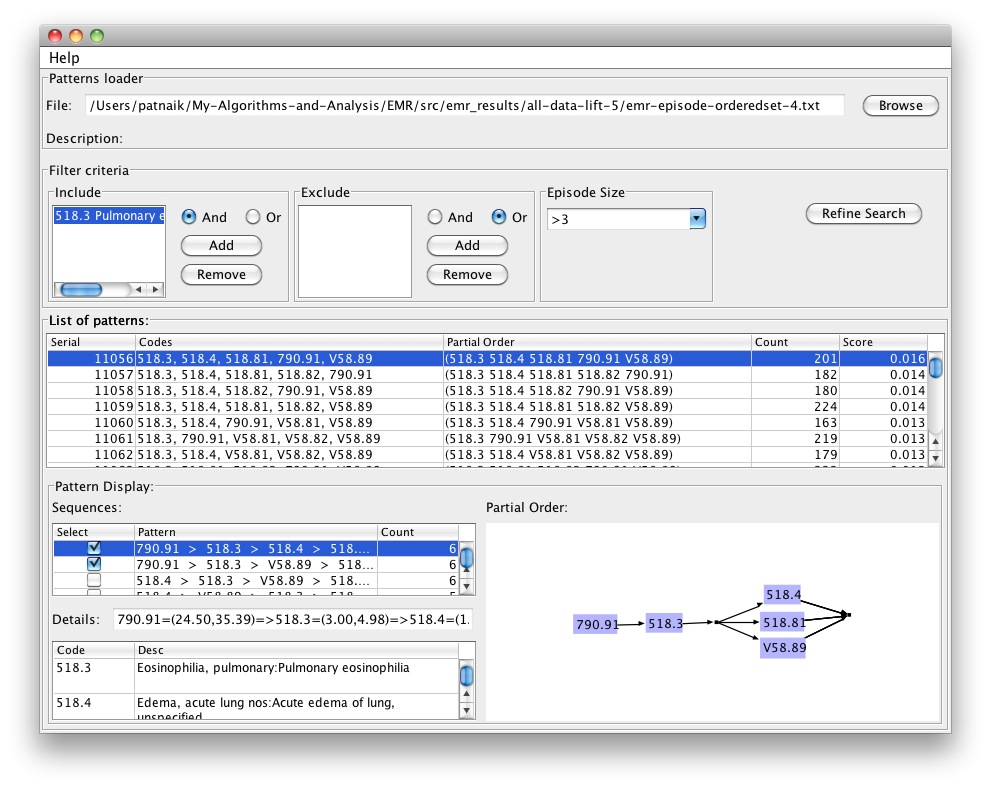
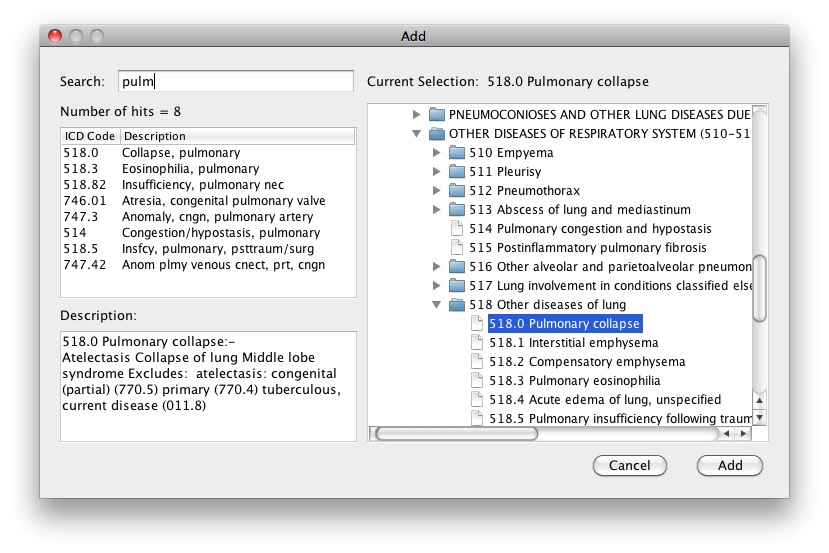

Authors:
Debprakash Patnaik, Dept. of Computer Science, Virginia Tech Blacksburg, VA
Patrick Butler, Dept. of Computer Science, Virginia Tech, Blacksburg, VA
Naren Ramakrishnan, Dept. of Computer Science, Virginia Tech, Blacksburg, VA
Laxmi Parida, IBM T.J. Watson Research, Yorktown Heights, NY
Benjamin J. Keller, Dept. of Computer Science, Eastern Michigan University, Ypsilanti, MI
David A. Hanauer, MD Dept. of Pediatrics and Communicable Diseases, University of Michigan, Ann Arbor, MI
Download:
Screenshots: EMRView
Main Screen: 
DX/PX Search-n-Add Dialog: 